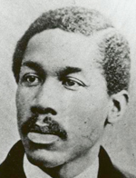

|

|

|
|
|
Minister, activist and reformer, Octavius Catto was born and raised in
Philadelphia, and educated at the Institute for Colored Youth, a
Quaker-run school for African-Americans. Catto had a great deal of skill
as an orator, and after graduation he followed his father William into
the ministry. He quickly became a prominent leader of Philadelphia's
African-American community, and an ardent civil rights activist.
Philadelphia was known in the antebellum era for its hostility to people
of color. After a visit to the city, Frederick Douglass wrote "There is
not perhaps anywhere to be found a city in which prejudice against color
is more rampant than in Philadelphia." Catto was not deterred, however.
He was particularly concerned with voting rights, which had been
extended to Pennsylvania's African-Americans by the state constitution
of 1790, and then revoked by an act of the state legislature in 1838. In
hopes of regaining the vote, Catto led petition drives, attended state
and national meetings of African-American leaders, gave countless
speeches, and organized election day protests. The only tangible result
of Catto's efforts was increased violence against Philadelphia's
African-American population, including an 1849 riot that received
national attention.
During the Civil War, Catto lobbied for the enlistment of
African-American troops, believing that men who had taken up arms for
the United States could not possibly be denied their rights as citizens.
When the word came in 1863 that government would begin to accept black
regiments, Catto organized a group of 100 volunteers. They traveled to
Harrisburg, and after some reluctance on the part of governor Andrew
Curtin, were mustered into the Union Army as part of the 6th U.S.
Colored Infantry.
After the war, Catto continued his work, and he was deeply gratified
by the passage of the Fifteenth Amendment in 1870. In October of 1871,
Philadelphia's first elections after the Amendment's passage, Catto
traveled around town exhorting all African-Americans to vote. As in
1849, there was a riot, and this time Catto was killed. His funeral was
attended by thousands of people, and according to one eyewitness, "Not
since the funeral cortege of Abraham Lincoln has there been one as large
or as imposing in Philadelphia." Catto's murder was an early indication
of what was to become a recurring theme of the Reconstruction era -
legal equality for African-Americans did not necessarily translate into
actual equality.
Source: Joan Waugh, ed. Facts on File Encyclopedia of American
History: Civil War and Reconstruction, 1856 to 1869 (New York: Facts on
File, 2003), 52-53.
|